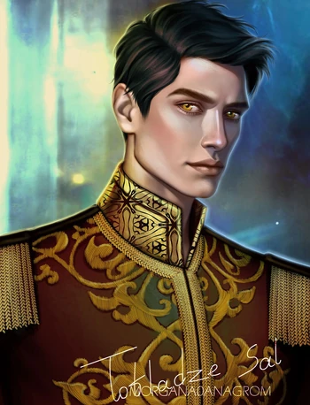
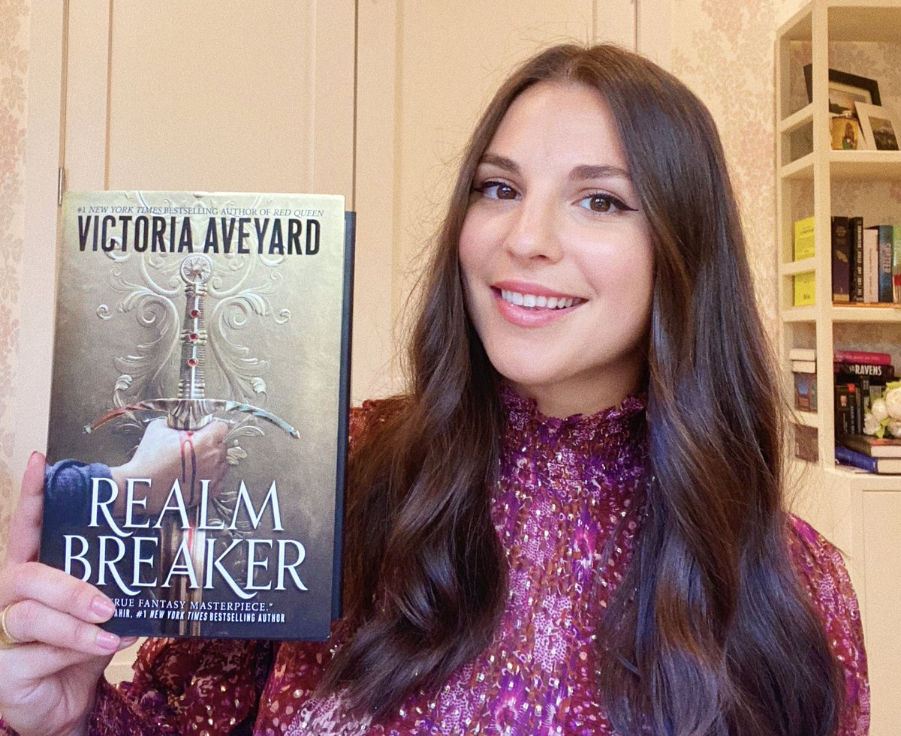

Bem Vindo(a) !!
Este é um site pensado para novos leitores da saga da rainha vermelha, explore e irá encontrar informações sobre os livros, personagens principais e sobre a autora das obras.


-

- 
-

Mare Molly Barrow também conhecida como Mareena Titanos é uma vermelha nascida nas palafitas em Norta, membro da guarda escarlate.Ela tem 3 irmãos(Shade, Bree, Tramy) e uma irmã(Gisa).
Tiberias VII também conhecido como Cal, é o herdeiro direto do trono do reino de Norta, ele tem um meio-irmão mais novo (Maven), Cal é filho de Coriane e Tiberias VI. Ele é um prateado pertencente à casa Calore, asssim tendo controle sobre fogo e calor.
Maven Calore é o segundo na fila do trono, tem um meio-irmão mais velho(Cal). Ele é filho único de Elara e Tiberias VI, nasceu como prateado pertencente à casa Calore, ou seja, tem controle sobre fogo e o calor porém não pode criálo
- 
Victoria Aveyard (East Longmeadow, 27 de julho de 1990) é um escritora norte-americana.Ela é conhecida por seu livro A Rainha Vermelha.Publicou seis best-sellers nº 1 no New York Times e a saga Rainha Vermelha foi traduzida para 37 idiomas.